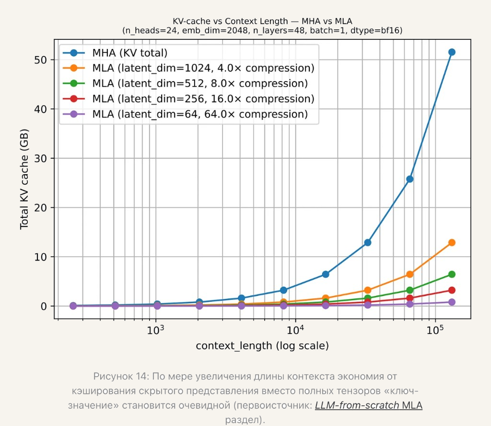

Лекция 2. Эволюция трансформеров к современным LLM-архитектурам15
Экономия на кэше в MLA

Тот же пример: 24 головы, ширина 2048, 48 слоёв, bf16. Около 10⁵ токенов кэш MHA около 52 ГБ. Ранг 512 сжимает его в 8 раз, до примерно 7 ГБ: в кэше один вектор длины 512 вместо ключа и значения, каждый ширины 2048. Ранг 64 на рисунке даёт 64×. У DeepSeek-V3 ранг тоже 512, но ширина 7168, поэтому множитель с этого графика туда не переносят.